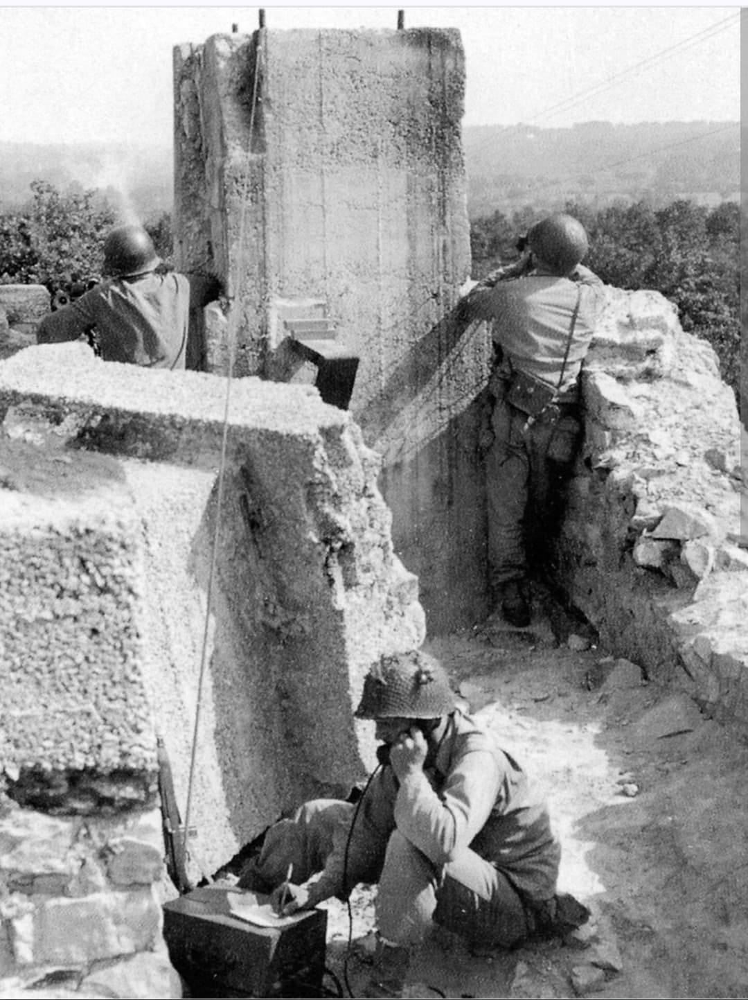
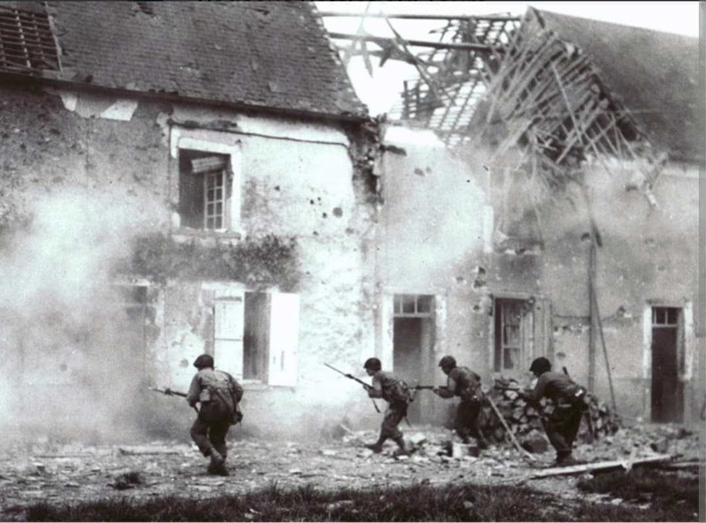

Introduction
Surnommée **« Old Hickory »** en hommage au président Andrew Jackson (originaire des États du Sud dont est issue la division de la Garde Nationale), la **30th Infantry Division** est l'une des unités d'infanterie les plus redoutables et décorées de l'US Army en Europe de l'Ouest.
Qualifiée après-guerre par les historiens de l'US Army comme la première division d'infanterie du théâtre européen en termes d'efficacité au combat, la 30e Division s'est immortalisée en brisant la grande contre-attaque blindée allemande à Mortain en août 1944.
1944 : Débarquement et le miracle de Mortain
Débarquée sur **Omaha Beach** le 11 juin 1944 (D+5), la division s'enfonce immédiatement dans les durs combats du bocage normand, traversant le Vire et ouvrant la voie à la percée de l'**Opération Cobra**.
Du 7 au 13 août 1944, lors de l'**Opération Lüttich**, Hitler ordonne une contre-offensive blindée massive à **Mortain** pour couper les lignes de Patton. Positionnée sur la colline 314, la 30th Infantry Division résiste stoïquement à quatre divisions SS blindées. Encerclés pendant des jours sans ravitaillement terrestre, les GI's tiennent leurs positions, détruisant des dizaines de tanks allemands et sauvant le flanc allié.

La percée de la ligne Siegfried et la prise d'Aix-la-Chapelle
Après la poursuite à travers la France et la Belgique, la 30th Division s'attaque en octobre 1944 à la **ligne Siegfried** (Westwall). Elle réussit à percer ce réseau fortifié au nord d'Aix-la-Chapelle (Aachen).
En faisant jonction avec la 1st Infantry Division, la 30e Division encercle complètement Aix-la-Chapelle, forçant la garnison allemande à capituler le 21 octobre 1944, marquant la prise de la première grande ville sur le sol allemand.
Face au Kampfgruppe Peiper et la course vers l'Elbe
Lors du déclenchement de la **bataille des Ardennes** en décembre 1944, la 30th Division est précipitée sur le flanc nord du pincer allemand. Elle stoppe net l'avance des colonnes blindées de la 1ère Division SS Panzer, bloquant le redoutable *Kampfgruppe Peiper* à Stavelot, La Gleize et Stoumont.
En mars 1945, la division franchit le Rhin lors de l'**Opération Flashpoint**, progresse rapidement à travers la plaine nord-allemande, capture Magdebourg et atteint le fleuve Elbe en avril 1945, scellant la défaite du IIIe Reich.

Voir aussi
Page du Musée HOP WW2 – Section Unités & Divisions Célèbres